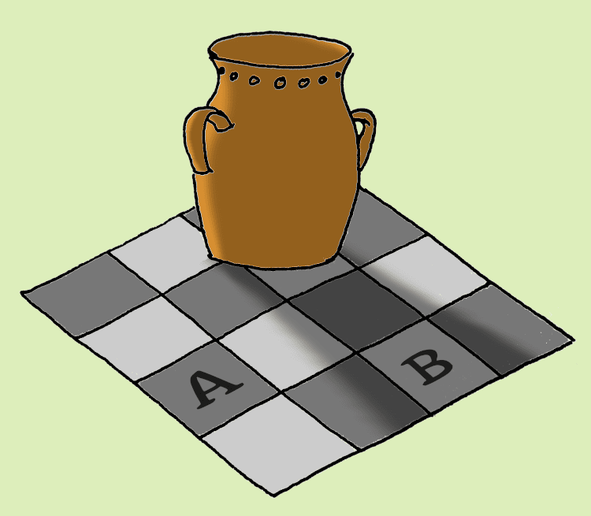

Auf dieser Website ist Platz für das, wofür mein Twitterprofil @charakterziffer nicht ausreicht. Mein Blog ist als Plus zu meinen Tweets gedacht, eben „@cz+“. // Die letzten drei Artikel:
Im Januar habe ich nicht nur ein Radiofeature über die Sängerin und Komponistin Caroline Shaw im Deutschlandfunk gehört. Ich habe außerdem mit der Leiterin des hiesigen Chors telefoniert, der leider noch in der Corona-Pause steckt. Wegen meines Umzugs Ende Oktober kann ich nämlich nicht mehr in Regensburg mitsingen und möchte mir hier einen neuen Chor suchen.
Caroline Shaws Vokalmusik und auch das Telefonat haben mich angeregt, wieder einmal etwas zu komponieren. Als Grundlage habe ich die Bibelstelle Jesaja 43,1 gewählt: „Fürchte dich nicht, denn ich habe dich erlöst; ich habe dich bei deinem Namen gerufen; du bist mein!“ Der Vers wird gern zu Beerdigungen genommen; ein Anlass, zu dem ich mir mein Stück gut vorstellen kann. Gedacht ist es aber allgemein als Trostlied.
Ursprünglich hatte ich das Lied vierstimmig angefangen, aber da empfand ich den Zusammenklang als zu schwer und streng, außerdem wurde die Melodieführung hörbar vertrackt – was ich für ein tröstendes Lied absolut nicht wollte. Also habe ich es noch einmal dreistimmig komponiert und dabei versucht, leichte und schwebende Reibungen hineinzuschreiben.
Die drei Stimmen entfernen sich voneinander, spannen einen Tonumfang auf, um sich dann wieder anzunähern, sehr eng zu verlaufen und sogar zur Einstimmigkeit zu finden. Klare, strahlende Reibungen münden immer wieder in ruhige, einfache Harmonien; schnellere Teile beruhigen sich und führen in lange Akkorde. Für einen ersten Eindruck habe ich die drei Stimmen eingesungen und in einem Schnittprogramm übereinandergelegt:
Die Aufnahmebedingungen waren leider nicht optimal und natürlich musste ich eine Oktave tiefer singen. Darum hier nochmal mit künstlichen Chorstimmen auf „Aaah“:
Falls euch das Lied gefällt, könnt ihr es gerne selbst singen. Vielleicht kennt ihr auch in einem Chor, für den dieses Lied geeignet wäre? Bei einem vierstimmigen Chor übernehmen Sopran und Alt die zwei oberen Stimmen, der Tenor kann die untere Stimme singen. Evtl. muss der Bass pausieren, vielleicht könnte er aber auch die oberste Stimme gemeinsam mit dem Sopran singen, nur eben eine Oktave tiefer. Hier die Noten zum Download:
Ich habe das Stück unter eine Creative-Commons-Lizenz gestellt mit Namensnennung, nicht kommerzieller Nutzung und Weitergabe unter gleichen Bedingungen (CC BY-NC-SA). Das heißt, jeder darf die Noten frei kopieren, weitergeben, singen und auch aufführen – dabei darf das Stück aber ohne meine Erlaubnis nicht kommerziell genutzt werden. Wer es gerne in einem Konzert mit Eintritt singen oder eine Aufnahme davon verkaufen möchte, melde sich bitte bei mir für eine erweiterte Lizenz; entweder per Mail an postfach2b [ät] web.de oder unten in den Kommentaren.
Komponiert ihr selbst manchmal? Für Gesang oder Instrumente? Was inspiriert euch? Ich freue mich über eure Erfahrungen!
Es ist erstaunlich, wie wir Menschen Informationen verarbeiten. Unser Gehirn kann in kürzester Zeit Muster erkennen, lernt aus Erfahrungen und macht Vorhersagen, verfolgt Ereignisse bis zu ihrer Ursache zurück und trifft blitzschnell Entscheidungen, ohne erst alle Details analysieren zu müssen.
Das funktioniert, weil unser Hirn Abkürzungen nimmt und Erfahrungen wiederholt. Eine Münze rutscht beim ersten Einwurf im Kaffeeautomaten durch? Na, dann reiben wir sie an einer Metallfläche und siehe: Jetzt nimmt der Automat sie an. Der Fahrstuhl kommt nicht? Einfach noch ein paar Mal drücken: Schon öffnen sich die Türen! – Dass die Münze auch ohne Reiben angenommen worden wäre und der Aufzug ohne erneutes Drücken eintrifft, haben wir nicht überprüft. Was dagegen hängen bleibt: Münze reiben hilft und mehrfach den Aufzugknopf drücken bewirkt etwas.

Wahrnehmungsfehler macht unser Gehirn auch bei optischen Täuschungen. Zum Beispiel haben im Bild die beiden Felder A und B genau den gleichen Grauton (zum Überprüfen den Maus-Cursor über die Felder bewegen, klappt leider nicht auf Touchgeräten). Wir sind es aber gewohnt, dass eine Farbe im Schatten dunkler aussieht – darum meint unser Gehirn, sie müsse eigentlich heller sein.
Mit den (Vor-)Urteilen, die wir aus unseren Erfahrungen gewinnen, können wir Situationen schnell meistern – wir machen dadurch aber auch immer wieder die gleichen Fehler. Ist aber nicht schlimm, denn unser Hirn bestätigt uns gern, dass wir nur Pech hatten, der Irrtum auf keinen Fall an uns gelegen hat und wir eigentlich doch richtig liegen.
Es gibt eine ganze Liste an kognitiven Verzerrungen, also systematischen Irrtümern, die uns unterlaufen, weil das menschliche Gehirn auf diese bestimmte Weise arbeitet. Drei Arten dieser Irrtümer möchte ich hier vorstellen:
Verfügbarkeitsheuristik
Hach, früher waren die Weihnachtsfeste doch viel schöner … Mit richtig viel Schnee, fast jedes Jahr! Schlittenfahren, ein Winterspaziergang mit der Familie, Schneemänner bauen, … Ähm, nein. Wirft man einen Blick in die Statistik, waren weiße Weihnachten schon immer eher die Ausnahme. Laut einer Auswertung des Meteorologen Fabian Ruhnau hatten Berliner:innen seit 1950 nur alle vier bis fünf Jahre weiße Weihnachten, Leute aus München immerhin alle drei Jahre.
Warum wir uns verschätzen und glauben, an den Feiertagen hätte immer viel häufiger Schnee gelegen? Weil diese Weihnachtsfeste dann ganz besonders waren und weil sie ein Idealbild sind, das wir aus Werbung und Filmen kennen. Wir erinnern uns leichter an etwas, wenn es ganz besonders war, wenn wir es wiederholt gesehen haben oder wenn es starke Gefühle ausgelöst hat. Sollen wir dann eine Frage einschätzen, über die wir wenig wissen, gewichten wir diejenigen Informationen stärker, die wir in unserer Erinnerung verfügbar haben.
Ein zweites Beispiel: In der Zeitreihe über Straftaten(xls-Datei) bei den polizeilichen Kriminalstatistiken des Bundeskriminalamts gehen die Handtaschenraube seit dem Jahr 2000 deutlich zurück, von rund 5.400 auf 1.500. Warum denken viele Leute trotzdem, es sei in den letzten Jahren in Deutschland wahrscheinlicher geworden, auf der Straße überfallen zu werden? Tja, weil wir mehr über Raubüberfälle lesen (z.B. online), uns empören und entsetzen und einzelne Fälle damit stärker in Erinnerung haben.
Scheinkorrelation
Oft entdeckt unser Gehirn Zusammenhänge, wo gar keine sind. Dann verwechseln wir Korrelation (zwei Entwicklungen verlaufen ähnlich) mit Kausalität (die eine Entwicklung verursacht die andere). Nur weil zwei Ereignisse gleichzeitig auftreten, müssen sie noch nicht zusammenhängen.
Eine falsche Schlussfolgerung könnte zum Beispiel sein, dass Eis-Essen einen Sonnenbrand verursacht. Es stimmt zwar, dass es mehr Sonnenbrände gibt, wenn mehr Speiseeis gegessen wird – das heißt aber nicht, dass eines davon das andere bewirkt. Der eigentliche Zusammenhang ist hier natürlich der Sommer, wo wir mehr Lust auf Eis haben und im stärkeren Sonnenschein kürzere Klamotten tragen.
Ist es nicht schön, wenn wir Dinge sehen, die unsere Annahmen bestätigen? Wenn wir Nachweise lesen, die unsere Einschätzung bekräftigen und unsere Weltsicht stützen? Es ist ein gutes Gefühl, etwas schon immer gewusst und von Anfang an richtig gelegen zu haben. Informationen, die unseren Ansichten entgegenkommen, hören sich glaubhafter und vertrauenswürdiger an.
Sich zu hinterfragen und zu riskieren, dass man vielleicht falsch liegt, ist schwieriger. Was, wenn man getäuscht wurde? Wenn doch nicht stimmt, was man lange geglaubt hat? Ganz schön verunsichernd, oder? Und auch ziemlich unangenehm. Fakten oder Leute, die uns widersprechen, sehen wir zu oft als Feinde; als etwas, wogegen wir uns verteidigen müssen. Vielleicht sogar ohne es zu merken suchen wir darum eher die Quellen, die uns bestätigen. Wir blenden widersprechende Fakten aus oder erklären sie zu kleinen, abweichenden Zufällen.
Wer sogar tief in einen Verschwörungsglauben gerät, unterstellt einfach allen mit anderer Auffassung eine böse Absicht. Jeder, der nicht die eigene Sicht teilt, ist halt gekauft, will manipulieren, gehört zu „denen“. Andere zu Feinden zu erklären ist irgendwann einfacher, als sich einzugestehen, dass man sich gehörig verrannt hat.
Eine ausführliche Beschreibung dieser kognitiven Verzerrung, gerade im Zusammenhang mit Verschwörungstheorien, habe ich auf der Aufklärungsseite Verschwörungstheorien.info gefunden.
Wie fällt man nicht darauf herein?
Um kein Opfer der eigenen Fehlwahrnehmung zu werden, hilft es, sich mit kognitiven Verzerrungen zu beschäftigen. Das Gehirn wendet Strategien an, um Sinneseindrücke schnell zu verarbeiten. Wer sich dessen bewusst ist, kann einen Schritt zurück treten und überlegen: Ist dieser Zusammenhang wirklich so, wie ich denke? Vielleicht schätze ich die Situation nur so ein, weil mein Hirn bestimmte Erinnerungen wichtiger findet, falsche Zusammenhänge herstellt oder sich ungern hinterfragen lässt.
Ein empfehlenswertes Buch zu dem Thema ist übrigens Schnelles Denken, langsames Denken von Daniel Kahneman. Der Psychologieprofessor erläutert darin sehr verständlich, welche systematischen Fehler uns bei intuitivem Denken oft unterlaufen.
Wie ist es bei euch? Seid ihr abgeklärt und fallt nicht so leicht auf falsche Annahmen rein? Damit könntet ihr recht haben – oder ihr unterliegt einfach der Verzerrungsblindheit, einem weiteren systematischen Irrtum, bei dem man sich selbst für objektiv und unbeeinflusst hält ;-)
Der Alltag der meisten Menschen gliedert sich in einen festen Rhythmus aus sieben Tagen: Ein verschlafener Montag, ein organisierter Dienstag, ein Mittwoch mit Bergfest, ein langer Donnerstag, ein Freitag voller Vorfreude und dann (endlich) das Wochenende: Samstag mit aufräumen, einkaufen, Freizeit, und der Sonntag zum Faulenzen oder für Zeit mit Familie und Freunden. So weit, so normal – oder?
Wer Schichtdienst in einem 10- oder 12-Tage-Rhythmus arbeitet, wer selbstständig oder schon in Rente ist, für den ist diese 7-Tage-Einteilung nicht ganz so selbstverständlich. Wenn man ausnahmsweise mal Dienstagmittag einkaufen geht, mittwochs Auto wäscht oder den Donnerstagmorgen im Museum verbringt, dann erlebt man eine Welt, die so ganz anders ist als gewohnt. Den eigenen Rhythmus zu verändern und zu hinterfragen, eröffnet eine neue Perspektive darauf, was ein normaler Alltag sein kann.
Auch dieses Jahr habe ich wieder einen Halbmonatkalender gestaltet, so wie schon oft zuvor. Das besondere an dem Design ist, dass eine Woche nicht in der gleichen Zeile steht, sondern Montag bis Mittwoch oben und dann Donnerstag bis Sonntag darunter. Damit werfe ich natürlich nicht den etablierten 7-Tage-Takt über den Haufen. Aber es ist doch ungewohnt und erfordert anfangs ein Umdenken, um den Kalender zu lesen. Aus der Zweiteilung der Woche ergeben sich gestalterisch einige Vorteile:
kompakte Anordnung, so dass die Wochen sogar im Hochformat auf eine DIN-A5-Seite passen – und zwar trotzdem mit …
Platz zum Reinschreiben, nämlich rund 8 cm² für kurze tägliche Notizen.
große Zahlen, die sich gut lesen lassen, auch wenn der Kalender drüben an der Wand hängt.
2–3 Wochen im Überblick, um einige Tage voraus- und zurückzuschauen.
ein frisches Konzept gibt’s als Bonus oben drauf, also nicht die 08/15-Vorlage in der abgenutzten Allerweltschrift Helvetica/Arial.
Stattdessen ist die Schriftart meines Kalenders dieses Jahr Chubbo von Rafał Buchner, erschienen im März bei der Indian Type Foundry.
Wer Graustufen lieber mag und dafür den Kalender auf farbiges Papier drucken möchte, kann die Schwarz-Weiß-Version herunterladen (PDF, 298 kB). Dann auf zwölf A4-Seiten ausdrucken, auf Wunsch jedes Blatt halbieren, sortieren und die Einzelblätter zusammenheften – zum Beispiel mit einer Vielzweckklammer, mit einer Spiralbindung aus dem Copy-Shop, mit etwas Leim entlang der oberden Kante oder einfach jede Seite mittig gelocht und aufgehängt.
Ich freue mich sehr, wenn ihr meinen Kalender weiterempfehlt. Dafür steht er unter einer Creative-Commons-Lizenz mit Namensnennung, nicht kommerzieller Nutzung und Weitergabe unter gleichen Bedingungen (CC BY-NC-SA). Wer den Kalender bearbeiten möchte (beispielsweise die optionalen Feiertage aufs eigene Bundesland anpassen), möge mich bitte kurz anschreiben oder hier kommentieren. Dann verschicke ich gerne die SVG-Dateien.
Das Wort kombiniert Persönlichkeit (Charakter) mit Sachlichem (Ziffer). Zusammengesetzt ergibt sich ein Synonym für Mediävalziffer, eine Zahlenvariante mit Ober- und Unterlängen.
Schriftarten dieses Blogs
Wenn dein Browser eingebettete Schriften (WOFF2) unterstützt, dann liest du die Fließtexte hier in der Source Sans Pro von Paul D. Hunt, erschienen 2012 bei Adobe.
Die Überschriften sind aus der czSlab gesetzt, die ich für dieses Blog gestaltet habe. Sie orientiert sich an Yanones viel ausgefeilterer Antithesis von 2014.
§ 1 Externe Links · Dieses Blog verlinkt auf Websites Dritter. Zum Zeitpunkt der erstmaligen Verlinkung waren dort keine Rechtsverstöße ersichtlich. Da ich keinen Einfluss auf fremde Websites habe, kann ich für deren Inhalte und Gestaltung keine Haftung übernehmen. Sollte ich von Rechtsverstößen erfahren, entferne ich die Verlinkung unverzüglich. Eine ständige Kontrolle der externen Links ist ohne konkrete Hinweise aber nicht zumutbar.
§ 2 Datenschutzerklärung · Mir ist der Schutz deiner Daten sehr wichtig. Deshalb verzichte ich auf Cookies, vermeide möglichst Dienste von Drittanbietern und erhebe so wenige Daten wie es geht. Diese Website kann ohne die Angabe persönlicher Daten genutzt werden.
Die einzige Ausnahme sind Kommentare. Wenn du einen meiner Texte kommentierst, bekomme ich die eingegebenen Daten und eine Zeitangabe per (prinzipiell unsicherer) E-Mail zugestellt. Falls dein Kommentar sachlich zur Diskussion beiträgt, ergänze ich ihn öffentlich sichtbar unter dem entsprechenden Artikel. Dabei sind sämtliche Angaben freiwillig (Name, Website, Mailadresse, Kommentar) – auch anonyme Kommentare sind möglich.
§ 3 Widerspruch gegen Direktwerbung · Die Verwendung meiner Kontaktdaten zur gewerblichen Werbung ist ausdrücklich nicht erwünscht; ich widerspreche hiermit jeder kommerziellen Nutzung und Weitergabe meiner Daten (gemäß § 21 DSGVO). // Über private Fanpost freue ich mich allerdings sehr und antworte darauf mit großem Vergnügen!
 @charak
@charak